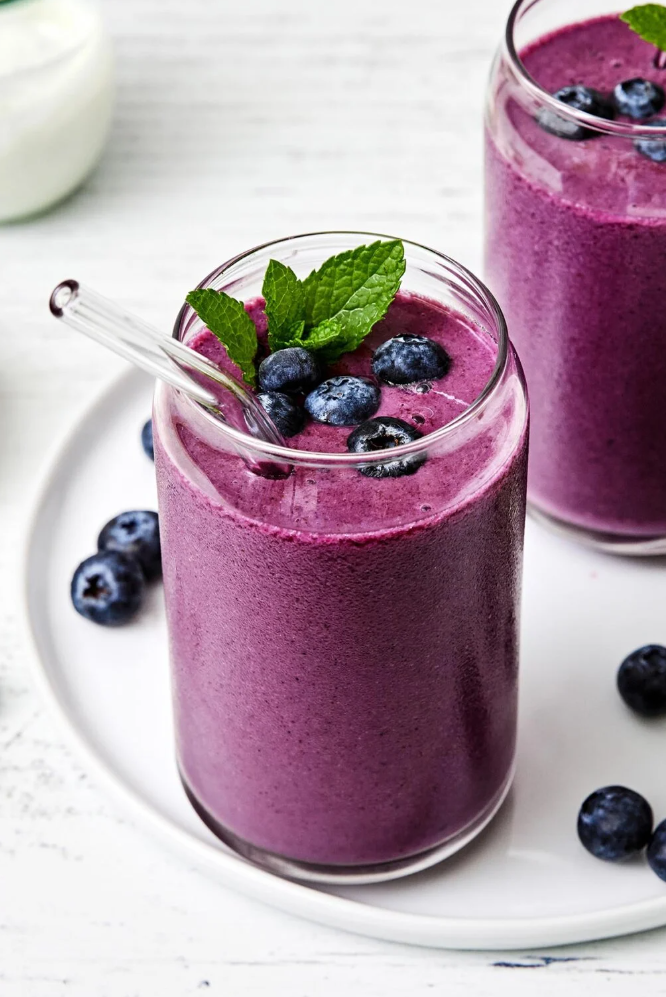

BLUEBERRY SMOOTHIE

Blueberry Smoothie
This blueberry smoothie isn’t just good — it’s excellent! Made from a handful of simple ingredients, It’s perfectly frosty, packed with nutrients and antioxidants, and deliciously sweet, naturally.
BLUEBERRY SMOOTHIE INGREDIENT NOTES
- Blueberries: To keep your smoothie chilled, it’s best to use frozen blueberries. If you have fresh blueberries on hand just pop them in the freezer for a few hours until frozen.
- Banana: Again, I recommend using a frozen banana, and you can follow my methods for freezing bananas. But if you forgot to freeze yours, that’s fine. The smoothie will just be slightly less thick and chilled.
- Coconut water: I love to use coconut water in smoothies because it’s loaded with electrolytes, it’s a great low-sugar alternative to fruit juice, and it’s a low-carb alternative to milk.
- Greek yogurt: A staple ingredient for adding protein and beneficial gut-happy probiotics.
- Flax seed: I’ve chatted about why I love flax seeds in my flax seed crackers recipe, but these little seeds are loaded with protein, fiber, and heart-healthy Omega-3s. They also help to thicken the smoothie up.
HOW TO MAKE THIS BLUEBERRY SMOOTHIE
- Meal prep tip #1: Pack the exact amount of blueberries, sliced bananas, flaxseeds, and other add-ins into small freezer-safe sealable bags or containers and store them in the freezer for up to 3 months. Then all you need to do is pour the ingredients into the blender with the coconut water and Greek yogurt when you’re ready to enjoy.
- Meal prep tip #2: If you want to avoid cleaning your blender multiple times, double the recipe and pour the other servings into freezer-safe mason jars (don’t forget to leave a little space at the top for expansion). These will last for up to 3 months in the freezer. When you’re ready to enjoy, let the jar thaw in the fridge overnight. Then give it a good shake before drinking!